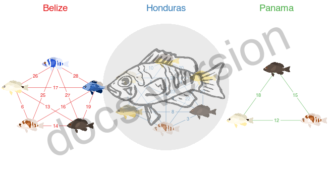
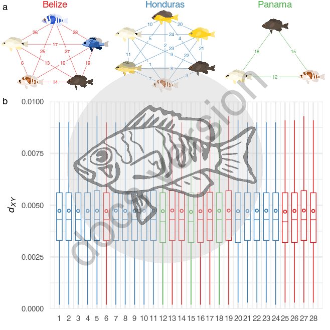

24 Supplementary Figure 2
24.1 Summary
This is the accessory documentation of Figure S2.
The Figure can be recreated by running the R script plot_SF2.R:
cd $BASE_DIR
Rscript --vanilla R/fig/plot_SF2.R 24.2 Details of plot_SF2.R
In the following, the individual steps of the R script are documented. It is an executable R script that depends on the accessory R package GenomicOriginsScripts, as well as on the packages hypoimg, hypogen and patchwork.
24.2.1 Config
The scripts start with a header that contains copy & paste templates to execute or debug the script:
#!/usr/bin/env Rscript
# run from terminal:
# Rscript --vanilla R/fig/plot_SF2.R \
# 2_analysis/dxy/50k/ 2_analysis/fst/50k/ 2_analysis/summaries/fst_globals.txt
# ===============================================================
# This script produces Suppl. Figure 2 of the study "Ancestral variation,
# hybridization and modularity fuel a marine radiation"
# by Hench, Helmkampf, McMillan and Puebla
# ---------------------------------------------------------------
# ===============================================================
# args <- c('2_analysis/dxy/50k/', '2_analysis/fst/50k/', '2_analysis/summaries/fst_globals.txt')
# script_name <- "R/fig/plot_SF2.R"The next section processes the input from the command line.
It stores the arguments in the vector args.
The needed R packages are loaded and the script name and the current working directory are stored inside variables (script_name, plot_comment).
This information will later be written into the meta data of the figure to help us tracing back the scripts that created the figures in the future.
Then we drop all the imported information besides the arguments following the script name and print the information to the terminal.
args <- commandArgs(trailingOnly=FALSE)
# setup -----------------------
library(GenomicOriginsScripts)
library(hypoimg)
library(hypogen)
library(patchwork)
cat('\n')
script_name <- args[5] %>%
str_remove(., '--file=')
plot_comment <- script_name %>%
str_c('mother-script = ', getwd(), '/', .)
args <- process_input(script_name, args)#> ── Script: R/fig/plot_SF2.R ────────────────────────────────────────────
#> Parameters read:
#> ★ 1: 2_analysis/dxy/50k/
#> ★ 2: 2_analysis/fst/50k/
#> ★ 3: 2_analysis/summaries/fst_globals.txt
#> ────────────────────────────────────────── /current/working/directory ──The directories containing the FST and dXY data, as well as the file containing the genome wide average FST values are received and stored in respective variables. Also, we set a few parameters for the plot layout:
# config -----------------------
dxy_dir <- as.character(args[1])
fst_dir <- as.character(args[2])
fst_globals <- as.character(args[3])
wdh <- .3 # The width of the boxplots
scaler <- 20 # the ratio of the Fst and the dxy axis
clr_sec <- 'gray' # the color of the secondary axis (dxy)Then we start with the data import for the FST data. First all file names are collected, then all files are imporeted and combined into a single tibble.
# start script -------------------
# import Fst
fst_files <- dir(fst_dir, pattern = '.50k.windowed.weir.fst.gz')
fst_data <- str_c(fst_dir,fst_files) %>%
purrr::map(summarize_fst) %>%
bind_rows()The same data import approach is used for the dXY data.
# lookup dxy files
dxy_files <- dir(dxy_dir)
# import dxy
dxy_data <- str_c(dxy_dir,dxy_files) %>%
purrr::map(summarize_dxy) %>%
bind_rows()The rank of the pair-wise species comparisons according to their FST determined.
# determine fst ranking
fst_order <- fst_data %>%
select(run, `mean_weighted-fst`) %>%
mutate(run = fct_reorder(run, `mean_weighted-fst`))Then the FST and dXY data are merged (this is due to the legacy of this script on by now makes little sense since the FST is not plotted anymore).
# merge fst and dxy cc_data
# (large parts of this code are now unnecessary after the separation of dxy and
# fst plots into separate panels b & c)
data <- left_join(fst_data, dxy_data) %>%
select(c(8,1:7,9:15)) %>%
# reformat table to enable parallel plotting (with secondary axis)
gather(key = 'stat', value = 'val', 2:15) %>%
# sumstat contains the values needed to plot the boxplots (quartiles, etc)
separate(stat, into = c('sumstat', 'popstat'), sep = '_') %>%
# duplicate dxy values scaled to fst range
mutate(val_scaled = ifelse(popstat == 'dxy', val * scaler , val)) %>%
unite(temp, val, val_scaled) %>%
# separate th eoriginal values from the scales ons (scaled = secondary axis)
spread(.,key = 'sumstat',value = 'temp') %>%
separate(mean, into = c('mean','mean_scaled'),sep = '_', convert = TRUE) %>%
separate(median, into = c('median','median_scaled'), sep = '_', convert = TRUE) %>%
separate(sd, into = c('sd','sd_scaled'),sep = '_', convert = TRUE) %>%
separate(lower, into = c('lower','lower_scaled'), sep = '_', convert = TRUE) %>%
separate(upper, into = c('upper','upper_scaled'), sep = '_', convert = TRUE) %>%
separate(lowpoint, into = c('lowpoint','lowpoint_scaled'), sep = '_', convert = TRUE) %>%
separate(highpoint, into = c('highpoint','highpoint_scaled'), sep = '_', convert = TRUE) %>%
# include "dodge"-positions for side-by-side plotting (secondary axis)
mutate(loc = str_sub(run,4,6),
run = factor(run, levels = levels(fst_order$run)),
x = as.numeric(run) ,
x_dodge = ifelse(popstat == 'dxy', x + .25, x - .25),
x_start_dodge = x_dodge - wdh/2,
x_end_dodge = x_dodge + wdh/2,
popstat_loc = str_c(popstat,'[',loc,']'))For the network plots we need a long-format version of the FST data though (another legacy piece).
# sort run by average genome wide Fst
fst_data_gather <- data %>%
filter(popstat == "weighted-fst") %>%
gather(key = 'stat', value = 'val', -run) %>%
# sumstat contains the values needed to plot the boxplots (quartiles, etc)
separate(stat, into = c('sumstat', 'popstat'), sep = '_') %>%
# duplicate dxy values scaled to fst range
mutate(val_scaled = ifelse(popstat == 'dxy', val * scaler , val)) %>%
unite(temp, val, val_scaled) %>%
# separate th eoriginal values from the scales ons (scaled = secondary axis)
spread(.,key = 'sumstat',value = 'temp') %>%
separate(mean, into = c('mean','mean_scaled'),sep = '_', convert = TRUE) %>%
separate(median, into = c('median','median_scaled'), sep = '_', convert = TRUE) %>%
separate(sd, into = c('sd','sd_scaled'),sep = '_', convert = TRUE) %>%
separate(lower, into = c('lower','lower_scaled'), sep = '_', convert = TRUE) %>%
separate(upper, into = c('upper','upper_scaled'), sep = '_', convert = TRUE) %>%
separate(lowpoint, into = c('lowpoint','lowpoint_scaled'), sep = '_', convert = TRUE) %>%
separate(highpoint, into = c('highpoint','highpoint_scaled'), sep = '_', convert = TRUE) %>%
# include "dodge"-positions for side-by-side plotting (secondary axis)
mutate(loc = str_sub(run,4,6),
run = factor(run, levels = levels(fst_order$run)),
x = as.numeric(run) ,
x_dodge = ifelse(popstat == 'dxy', x + .25, x - .25),
x_start_dodge = x_dodge - wdh/2,
x_end_dodge = x_dodge + wdh/2,
popstat_loc = str_c(popstat,'[',loc,']'))
run_ord <- tibble(run = levels(data$run),
run_ord = 1:length(levels(data$run)))At this point we can prepare the plotting of the network panel. This starts by creating a tibble with the configurations of each individualnetwork.
# assemble panel a
networx <- tibble( loc = c('bel','hon', 'pan'),
n = c(5, 6, 3),
label = list(str_c(c('ind','may','nig','pue','uni'),'bel'),
str_c(c('abe','gum','nig','pue','ran','uni'),'hon'),
str_c(c('nig','pue','uni'),'pan')),
weight = c(1,1.45,1)) %>%
purrr::pmap_dfr(network_layout) %>%
mutate(edges = map(edges, function(x){x %>% left_join(fst_data_gather %>% filter(popstat == "weighted-fst") %>% select(run, median, mean)) }))Then we can plot the networks by running plot_network() and combine them using cowplot::plot_grid().
plot_list <- networx %>%
purrr::pmap(plot_network, node_lab_shift = .2)
p_net <- cowplot::plot_grid(
grid::textGrob('Belize', gp = gpar(fontsize = plot_text_size, col = clr_loc[["bel"]])),
grid::textGrob('Honduras', gp = gpar(fontsize = plot_text_size, col = clr_loc[["hon"]])),
grid::textGrob('Panama', gp = gpar(fontsize = plot_text_size, col = clr_loc[["pan"]])),
plot_list[[1]] + theme(legend.position = "none"), plot_list[[2]] + theme(legend.position = "none"), plot_list[[3]] + theme(legend.position = "none"),
ncol = 3,
rel_heights = c(.1,1)
) %>% cowplot::as_grob()
We can now also plot the second panel.
# assemble panel b
p <- data %>%
filter(popstat == "dxy") %>%
ggplot(aes(color = loc)) +
geom_segment(aes(x = x, xend = x,
y = lowpoint, yend = highpoint),
lwd = plot_lwd)+
geom_rect(aes(xmin = x - wdh, xmax = x + wdh,
ymin = lower, ymax = upper),
fill = 'white',
size = plot_lwd)+
geom_segment(aes(x = x - wdh,
xend = x + wdh,
y = median,
yend = median),
lwd = plot_lwd)+
geom_point(aes(x = x, y = mean),
shape = 21, size = .7, fill = 'white')+
scale_x_continuous(breaks = 1:28) +
scale_y_continuous( expression(italic(d[XY])),
breaks = c(0,.0025,.005,.0075,.01),
limits = c(0,.01))+
scale_color_manual(values = c(make_faint_clr('bel'),
make_faint_clr('hon'),
make_faint_clr('pan'))[c(2,4,6)])+
coord_cartesian(xlim = c(0,29),
expand = c(0,0))+
theme_minimal()+
theme(text = element_text(size = plot_text_size),
axis.title.x = element_blank(),
legend.position = 'none',
strip.placement = 'outside',
strip.text = element_text(size = 12),
axis.text.y.right = element_text(color = clr_sec),
axis.title.y.right = element_text(color = clr_sec))To create the final Figure S2.
# merge panel a & b
p_done <- plot_grid(p_net, p, ncol = 1,
rel_heights = c(.4, 1),
labels = letters[1:2],
label_fontface = "plain",
label_size = plot_text_size)
Finally, we can export Figure S2.
# export figure 1
hypo_save(p_done,
filename = 'figures/SF2.pdf',
width = f_width * .5,
height = f_width * .5,
comment = plot_comment)